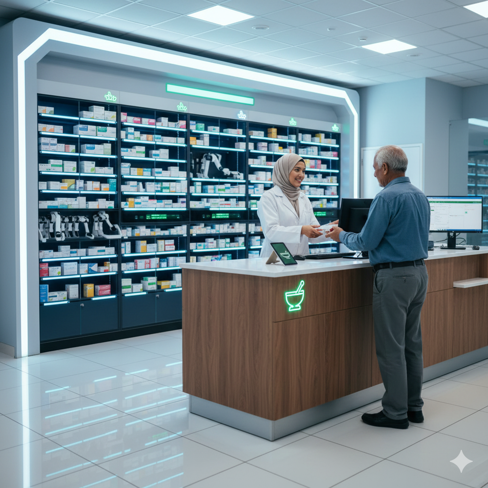

Jaminan Kualitas dan Keamanan Terapi Obat
Instalasi Farmasi kami adalah pusat pelayanan obat 24 jam yang terintegrasi, didukung oleh sistem manajemen inventaris modern dan standar dispensing obat yang ketat.
- Ketersediaan obat esensial dan spesialis 24 jam sehari.
- Konsultasi dan edukasi obat gratis oleh Apoteker Klinis.
- Sistem dispensing terkomputerisasi untuk meminimalkan risiko kesalahan dosis (medication error).
- Pelayanan Farmasi Rawat Inap, Rawat Jalan, dan Homecare terpadu.